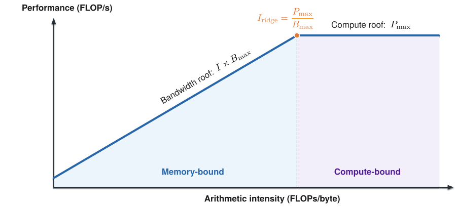
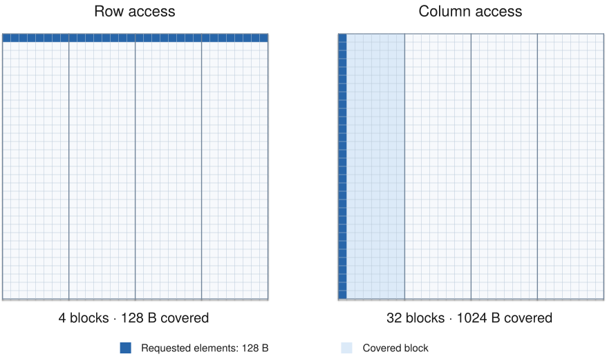

Roofline Model
Roofline model 描述了算术强度与性能上界的关系。算术强度较低时，性能上界由内存带宽决定，较高时则由算力决定。
Definition
设一个算子的一次执行需要 \(F\) 次浮点运算，从设备内存读写 \(D\) 字节，其算术强度为：
如果设备的峰值计算吞吐为 \(P_{\max}\)，峰值内存带宽为 \(B_{\max}\)，则该算子的性能上界为：

其中 \(I B_{\max}\) 是内存带宽能够支撑的计算吞吐。算术强度较低时，数据供应速度不足以支撑峰值算力，性能上界由内存带宽决定，对应图中的 memory-bound 区域。随着算术强度提高，单位数据对应的计算量增加，带宽所能支撑的计算吞吐随之上升。当它达到设备的算力上限 \(P_{\max}\) 后，继续提高算术强度也不会抬高性能上界，此时进入 compute-bound 区域。两条上界相交时的算术强度等于设备的算力带宽比：
计算算术强度时，数据量应与带宽对应。例如，使用 HBM 带宽时，\(D\) 表示算子读写 HBM 的数据量。
Arithmetic Intensity
提高算术强度意味着每读取一个字节的数据，完成更多计算。在图中，这会让算子的位置向右移动。在到达转折点之前，对应的性能上界也会提高。
增加 Batch Size
考虑一个线性层 \(Y=XW\)。设输入 \(X\) 的形状为 \([b,d]\)，权重 \(W\) 的形状为 \([d,d]\)，其中 \(b\) 是一次计算中处理的 token 数。矩阵乘的计算量约为：
假设每个权重占 2 字节，且这次计算从 HBM 读取一遍权重。当 \(b \ll d\) 时，权重矩阵的数据量远大于输入和输出，数据搬运以权重读取为主，因此忽略输入和输出的读写，近似得到：
当 \(b\) 从 1 增加到 32 时，读取的权重不变，参与计算的 token 数增加到 32 倍，算术强度也从约 1 增加到 32 FLOPs/byte。Batching 就是通过这种权重复用提高算术强度。
Prefill 和 decode 在线性层上的差异也可以这样理解。Prefill 一次处理多个输入 token，权重可以在这些 token 之间复用。Decode 每轮为每个活跃请求处理一个 token，低并发时的 \(b\) 较小，权重复用有限。将多个请求组成 batch，可以增大这一轮的 \(b\)。
Speculative decoding 的 verification 沿着同一方向起作用。每个请求一次提交 \(q\) 个候选 token 时，这一轮 target forward 的 \(b\) 就从请求数扩大到请求数乘 \(q\)，权重因此能在更多 token 之间复用。这部分的展开见 Speculative Decoding §6.2。
减少数据搬运
量化通过减少数据量提高算术强度。在同一个例子中，如果每个权重从 2 字节减到 1 字节，忽略量化元数据和格式转换的开销，权重流量减半，算术强度变为：
数据搬运还取决于算子的实现。例如，算子融合可以省去中间结果写回 HBM、再从 HBM 读出的过程。在计算量基本不变时，减少这部分流量也会提高算术强度。
Memory Bandwidth
对于给定的设备，内存带宽上限 \(B_{\max}\) 是固定的。kernel 的访存方式决定了传输是否高效，以及能否充分利用已有带宽。
访存合并
每个线程请求自己需要的元素，GPU 则按一定大小、对齐的数据块访问内存。对于同一个 warp 的一次访存指令，GPU 会合并各线程的请求：落在同一个块内的请求可以由一次内存事务满足。因此，请求的地址越集中，通常需要的事务越少。
考虑一个按行连续存储的 \(32\times32\) 矩阵，每个元素占 4 字节。在这个简化例子中，假设一次事务访问一个 32 字节块，矩阵起点与块边界对齐。每块容纳 8 个元素，一行的 32 个元素正好占 4 个块。

图中每个小格代表一个元素，深蓝色表示线程需要的数据。一个 warp 的 32 个线程在同一次访存指令中各请求一个 4 字节元素：
- 按行读取：32 个元素在内存中连续，覆盖 \(32/8=4\) 个块。每块内的 8 个线程请求合并为一次事务，共需 4 次事务，覆盖 128 字节。
- 按列读取：32 个元素分别来自 32 行，在内存中相隔一整行，落在 32 个不同的块中。这些请求无法合并，共需 32 次事务，覆盖 1024 字节，但每块只使用其中的 4 字节。
两种方式中，每个线程都只请求 4 字节，整个 warp 都需要 128 字节。不同的是，这些请求合并后需要访问多少个块。
如果接下来继续读取其他列，就可能复用缓存。例如，先读第 0 列，从每行各取回一个块，每个块都包含该行第 0～7 列的元素。再读第 1 列时，每行所需的元素已经在该行之前取回的块中，缓存命中就不必再次访问 HBM。这里的复用发生在前后读取不同列之间，同一次列读取中的 32 个请求仍然访问不同的块。因此，逐列读完整个矩阵时，事务更多，实际 HBM 流量却可能与逐行读取相同。
访存合并减少了事务数量和请求处理开销。如果 HBM 流量 \(D\) 不变、耗时 \(T\) 缩短，实际带宽 \(B_{\mathrm{actual}}=D/T\) 就会提高。如果实际 HBM 流量也减少了，算术强度 \(I=F/D\) 也会提高。
访存并行度
一次内存请求从发出到数据返回，需要一定时间。如果每次都等上一个请求完成后才发出下一个请求，内存系统就难以持续传输数据，即使峰值带宽很高，也无法充分利用。
访存并行度指同时尚未完成的内存请求数量。对于相互独立的请求，GPU 可以在等待前一个请求返回时，继续发出其他请求。多个 warp，以及同一线程内的独立访存，都可以提供这种并行性。如果下一次访问的地址依赖前一次读取的结果，就必须等待，难以形成并行访问。
在 HBM 流量不变时，更充分的访存并行可以缩短耗时，提高实际带宽 \(B_{\mathrm{actual}}\)。对应到 Roofline 图上，算术强度不变，实测点向上靠近性能上界。
Compute Throughput
对于给定的设备、计算精度和指令类型，峰值计算吞吐 \(P_{\max}\) 是固定的。软件优化主要是让计算单元得到充分利用，使实际吞吐更接近这一上界。
矩阵太小、任务划分不均或同步等待，都可能让部分计算单元空闲。选择合适的矩阵分块、提供足够的并行任务、减少同步开销，可以提高计算利用率。在算术强度不变时，实测点向上移动，水平的算力上界保持不变。
改用低精度计算则可能改变上界本身。例如，权重量化可以减少数据搬运，如果计算也使用了峰值吞吐更高的低精度指令，算力上界也会提高。